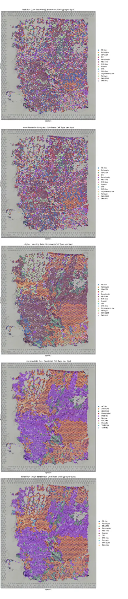
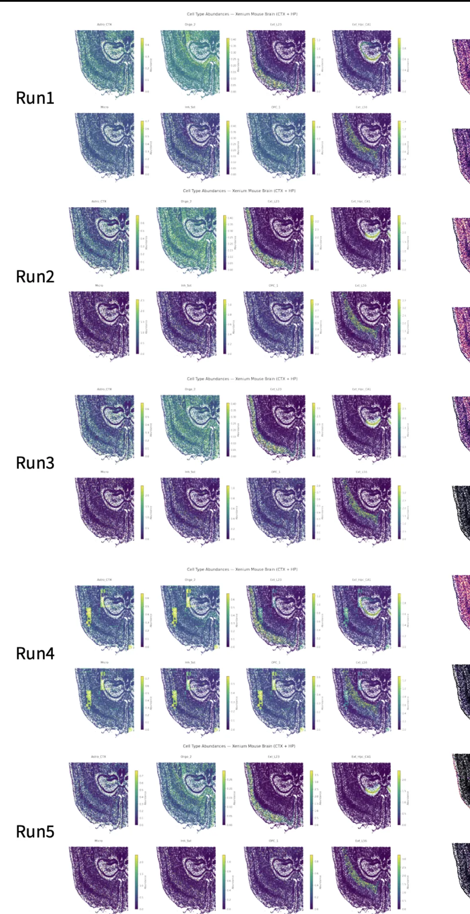
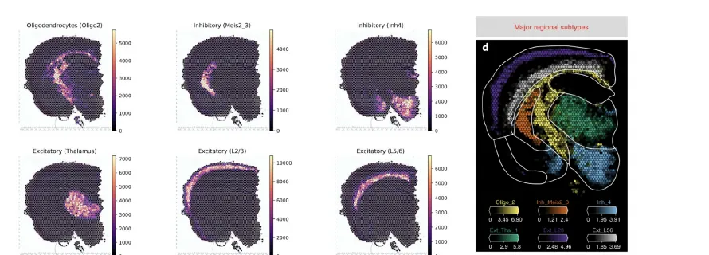

Team project (3 people), DS 596 at Boston University · April 2026
Cell2location: Spatial Mapping of Cell Types
Reproduction and extension of cell2location (Kleshchevnikov et al., 2022, Nature Biotechnology) on mouse brain Visium, human glioblastoma Visium and Xenium.
Team project. With Vaidehi Gupta and Chloe Ploss. My part: found and downloaded all the datasets, built the GBmap reference, ran the glioblastoma extension and its five-configuration sweep, presented the method and that extension, and wrote those sections. Teammates produced the mouse Visium reproduction and the Xenium extension.
The problem
Visium spots hold several cells each, so a spot's expression is a mixture. Cell2location untangles it with a Bayesian model: it learns a signature for each cell type from single-cell data, then estimates how many cells of each type sit in each spot, while modeling technical noise separately.
We asked two questions the paper left open: does it work in a heterogeneous tumor, and can it handle single-cell-resolution data from Xenium?
What I did
Reproduce first
Figures 2b to 2e of the paper from the authors' public mouse brain data. The full 30,000-iteration run took about 22 minutes on a V100 GPU.
Glioblastoma extension
No ready-made reference existed, so I built one from GBmap (39,355 cells from 110 patients, 14 cell types), joining the count matrix and annotations by hand. After QC, 25,731 genes were shared with the 3,468-spot Visium section. The cell-number prior of 15 per spot came from the histology, since tumors are dense.
Five-run sensitivity sweep
Regression iterations, spatial iterations, combinations, learning rate and posterior samples were varied over five configurations, from a quick test to near paper settings.
Xenium extension
36,602 cells and 248 genes, 247 of them shared with the reference, mapped against 59 mouse cell types across five runs that varied iterations, learning rate, train/validation split and posterior sampling.
Code
# Force Theano to use CUDA GPU.
# This must be set before theano is imported anywhere in the Python process.
os.environ["THEANO_FLAGS"] = "device=cuda,floatX=float32"
Python: force Theano onto the GPU before anything imports it
CONFIGS = {
"run1_test": {
"display": "Test Run (Baseline)",
"n_iter_reg": 100, "n_iter_spat": 500, "n_comb": 20,
"lr": 0.005, "n_samples": 200, "batch_size": 200,
"est_min": 25,
},
# ...
"run5_final": {
"display": "Final Run (Paper Quality)",
"n_iter_reg": 2000, "n_iter_spat": 10000, "n_comb": 30,
"lr": 0.005, "n_samples": 500, "batch_size": 500,
"est_min": 1020,
},
Python: the five-configuration sweep (first and last)
Results




| Run | Reg. iter | Spatial iter | Combos | Learning rate | Posterior samples |
|---|---|---|---|---|---|
| 1 Test | 100 | 500 | 20 | 0.005 | 200 |
| 2 More samples | 100 | 500 | 20 | 0.005 | 500 |
| 3 Higher LR | 100 | 500 | 20 | 0.025 | 200 |
| 4 Intermediate | 500 | 5,000 | 30 | 0.005 | 500 |
| 5 Final | 2,000 | 10,000 | 30 | 0.005 | 500 |
What I learned and what I would do differently
- MES-like cells came out as the dominant malignant state in all five configurations, the top three (MES-like, astrocyte, CD4/CD8) matched between the quick test and the final run, and endothelial cells landed on vessels, a useful internal check. A higher learning rate ran faster but reordered the low-abundance types.
- In the Xenium runs, the one with a 70/30 train/validation split and doubled posterior samples produced two rectangular patches of inflated abundance across every cell type, and no other run did. Artifacts like that are how you learn what a parameter really changes.
- Constraints we worked around: the newest release did not fit in our 10 GB cluster quota, so we used the authors' Singularity container with the older PyMC3/Theano version, which in turn needed an older V100 GPU. The tool outputs one cell type at a time, so the paper's multi-color composites were out of reach.
Tools
Links
Mesenchymal-like (MES-like) cells were the dominant glioblastoma cell state in every one of the five parameter configurations.